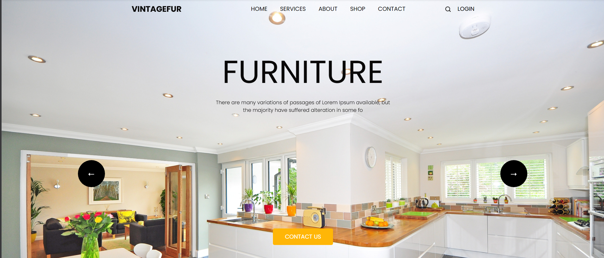

Transformasi Ruang Impian Anda
Dari konsep visual hingga instalasi akhir, kami menghadirkan layanan desain interior komprehensif yang memadukan estetika modern dengan fungsionalitas presisi.
Konsultasi GratisLayanan Unggulan Belution
Desain Interior Residensial
Perancangan rumah, apartemen, dan villa dengan tata letak ergonomis serta pemilihan estetika yang mencerminkan kepribadian Anda.
- Layout & Perencanaan Ruang
- Pemilihan Skema Warna & Material
- Visualisasi 3D Photorealistic
Interior Komersial & Ruang Kerja
Desain kantor, kafe, restoran, dan toko ritel yang dirancang untuk mengoptimalkan produktivitas serta daya tarik pelanggan.
- Spatial Branding & Visual Identity
- Zoning & Flow Alur Pengunjung
- Pencahayaan & Akustik Ruang
Manufaktur Furnitur Kustom
Pembuatan kitchen set, lemari, meja, dan kabinet kustom di workshop milik sendiri menggunakan material berkualitas premium.
- Presisi Ukuran & Fitting High-End
- Finishing HPL, Duco, & Natural Wood
- Garansi Konstruksi & Engsel
Pilih Paket Sesuai Kebutuhan
Fleksibilitas penuh untuk membantu proyek dalam skala apa pun.
Desain & Visual 3D
Cocok untuk Anda yang membutuhkan ide desain visual profesional dan gambar kerja sebelum konstruksi.
- ✓ Konsultasi & Survey Lokasi
- ✓ Layout 2D & Moodboard Concept
- ✓ Visual Rendering 3D High-Res
- ✓ Gambar Kerja Teknis (DED)
- ✓ Rencana Anggaran Biaya (RAB)
Design & Build (All-In)
Solusi end-to-end tanpa repot. Kami menangani seluruh proses dari sketsa awal hingga serah terima kunci.
- ✓ Semua Layanan Paket Desain 3D
- ✓ Pengadaan Material & Fabrikasi
- ✓ Manajemen Pekerjaan Lapangan
- ✓ Pengawasan Kualitas (QC) Ketat
- ✓ Garansi Pemeliharaan Post-Project
Furnitur Custom
Khusus bagi Anda yang sudah memiliki desain sendiri dan memerlukan manufaktur mebel berkualitas tinggi.
- ✓ Pengukuran Presisi On-Site
- ✓ Pemilihan Material & Sample HPL
- ✓ Produksi Workshop Independen
- ✓ Pengiriman & Penginstalan
- ✓ Garansi Engsel & Aksesoris
Material Superior & Finishing Presisi
Kami hanya menggunakan bahan pilihan terbaik yang tahan lama, bebas rayap, dan aman untuk kesehatan keluarga maupun lingkungan kerja Anda.
Lebih kuat dan tahan lembab dibandingkan MDF/Particle board, menjaga struktur furnitur tetap kokoh hingga berpuluh tahun.
Material sintetis kelas tinggi yang 100% tahan air dan benar-benar anti rayap. Sangat ideal digunakan untuk area basah seperti kitchen set di bawah bak cuci piring atau area kabinet kamar mandi.
Olahan kayu bernoda halus dengan permukaan ultra-rata yang sangat presisi untuk ukiran/profil. Varian HMR (Moisture Resistant) memberikan ketahanan ekstra dari kelembapan udara.
Tersedia ratusan tekstur kayu, marmer, hingga warna solid matte/glossy dengan daya tahan gores yang tinggi.
Engsel dan rel laci berkualitas yang dilengkapi fitur soft-closing untuk kenyamanan serta daya tahan ekstra.

Siap Mewujudkan Ruang Impian Anda?
Konsultasikan ide interior Anda dengan tim desainer profesional Belution Studio secara gratis.